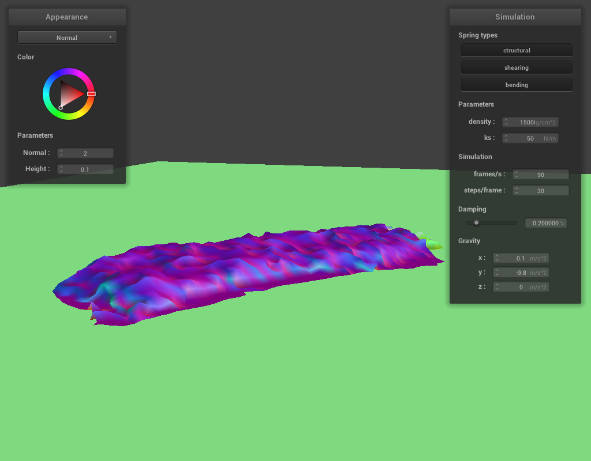

Cloth Simulation Write-Up
CS184/284A Spring 2025

Overview
In this project we created an engine that simulates and renders real time physics acting on a cloth. We accomplished this by building out a grid of point-masses and applying different external forces (such as gravity) to those point masses– but we also simulate spring physics on the point masses, giving a feeling of elasticity to the cloth, allowing us to simulate collision with other objects, and self-collision with other parts of the cloth. This allows us to do things like drop cloth on spheres and let the cloth wrap around and cover it– or dropping cloth on the ground and letting the cloth crumple up on itself. Finally, we added the ability to render textures onto the cloth, allowing for various surfaces to be mapped to the contours of the cloth. It was really interesting playing around with the different parameters in the simulation (like the spring constant, density of the cloth, and external forces in different directions) and see how these changes impacted the way the cloth interacted with its environment.
Part 1: Masses and springs
To begin with our task of simulating cloth, we constructed a grid of point-masses and springs, representing a cloth object. We define constraints between neighboring points, including structural, shearing, or bending points. These will allow us to define different internal forces in the cloth, later such that we can drape cloth over other objects or let the cloth realistically pile into itself.
Here, we see a a grid of point-masses connected by structural and bending constraints:
Here, we see the shearing constraints between points defined:
Finally, we combine these constraints together to form our grid:
Part 2: Simulation via numerical integration
With the grid of masses and springs assembled, we began simulating physics by applying external forces to each point-mass; this is determined as a series of 3D vectors corresponding to direction and magnitude of forces in the X Y and Z axes. We find the total external force and apply this to our masses equally along the grid. We also model the spring constraints via parameters of ks (the spring constant), the density of the cloth mass, and a ratio of damping.
With very low ks, the cloth falls faster and appears to bend and sag more, while with high ks the cloth appears much more rigid and stiff.
|
|
|
For density, behavior appears to be the opposite of ks. With lower density the cloth appears more stiff , while with higher density the cloth sags more and is more bouncy and bendy.
|
|
|
We can also set the density to a negative value to see beyond the limits of the universe:
With high damping the cloth slowly falls and comes to rest quickly. With much lower damping, the cloth falls faster and takes a longer time to come to rest since it sways back and forth.
|
|
|
We can see the affect of these constraints on a cloth as seen below, with its four corners pinned in place while the rest of its point masses hang freely, affected by the external and internal forces:
Part 3: Handling collisions with other objects
For handling collisions with spheres, we check if a point mass is inside the sphere by getting the distance from the sphere’s origin to the point mass and checking if it’s less than the radius. If so, we find the tangent point by getting the closest point on the surface, calculate a correction vector towards the tangent point, scale it by 1 - friction, and finally update the position by applying the correction to the last position.
For planes, we check collisions by seeing if the point mass crossed the plane between time steps. This is done by comparing signed distances of the current and last position relative to the plane’s normal. If there is a collision (the current position is less than the surface offset), we get the depth of how far the point has penetrated the surface, and then a target point using that penetration depth. Finally, just like the sphere we get a correction vector and update the position accordingly.
As we adjust the value of ks within our simulation, the rigidity of the cloth appears to change, since the spring constant has varying levels of affect. The lower the value of ks, the more the cloth fits to the contours of the sphere, and the less we see wrinkles. However, as the value of ks increases we see wrinkles appear with increasingly pronounced shapes as the cloth takes on a stiffer structure.
We can also simply lay the cloth flat on the ground:
Part 4: Handling self-collisions
To handle self-collision we implemented spatial hashing. We partition the 3D space into blocks that populate a hashmap, where keys are those block volumes and their values are the point masses within that block. The self_collide function then goes through the point masses and gets candidate point masses from the corresponding block in the hashmap, checking the distance to each candidate (excluding itself). If the distance is smaller than the threshold distance of 2 * thickness, a correction vector is made to push the point mass away from the candidate. These correction vectors are averaged and scaled down by simulation_steps before being applied to the point mass, ensuring that the points maintain separation.
|
|
|
|
|
|
As we increase the density of the cloth, it falls to the ground much faster. This happens because the acceleration of the cloth is based on its mass (and as the density adjustment makes no changes to the volume of the cloth, the density adjustment is only affecting the mass). We can see below that the cloth piles in a more compact and chaotic shape on the ground, and the part of the cloth that has not yet hit the ground keeps a more flat shape. This is probably because the forces pulling the cloth directly towards the plane are stronger than the other spring constraints. It also becomes more flat more quickly than with lower density values, as we’ll later see.
|
|

|
With lower density values, the shape of the cloth contorts much more quickly and in a more impactful way. As well, there’s more bounce and air-time as the cloth hits the ground. As before, this is probably because the lower acceleration force means that the impact of the spring forces in the cloth are more evident.
|
|
|
When changing the ks parameter, a notable affect is that is the ks value increases, the rigidity of the shape is increased and the folds are more pronounced and rounded. With lower ks values, the shape is less rigid and takes on almost a gelatinous shape and movement.
|
|
|
Part 5: Shaders
Shaders are programs that the GPU executes, which allow for more realtime high-performance graphics. A vertex shader runs for every vertex, transforming its position from world to screen space, and passing varying outputs like texture coordinates and world space normals. Then, fragment shaders are run on pixel fragments, using these passed varying data to calculate final colors of the fragments based on lighting and material properties.
The Blinn-Phong shading model computes the color of a point on a surface in order to simulate realistic lighting, combining components of ambient light, diffuse reflection, and specular reflection. Ambient light represents indirect light providing global illumination, diffuse reflection simulates light scattering on matte surfaces depending on hitpoint angles, and specular reflection provides shiny highlights. The final result color is the sum of these three components, weighted by material and lighting coefficients.
Bump mapping and displacement mapping both enhance the detail of surfaces using textures. Bump mapping purely uses shading, modifying only the surface normals based on a heightmap texture’s slopes. This doesn't actually modify the geometry, it only gives the illusion of texture through lighting. With displacement mapping vertex positions are actually changed, being moved along their normals according to their height map value. This actually modifies the geometry, resulting in more realistic lighting.
With bump mapping, switching between -o 16 -a 16 and then -o 128 -a 128 doesn’t really provide a significant difference of the texture appearance. However, with displacement mapping the texture was more noticeably changed, the triangle angles of the sphere were much more pronounced with the lower resolution. This makes sense since the actual normals of the surface with displacement mapping is altered.